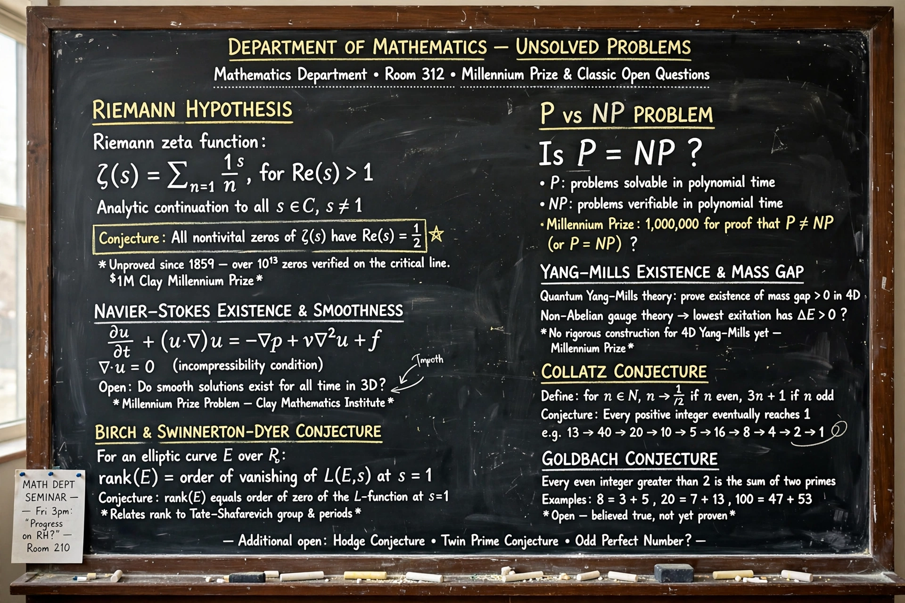

List of unsolved problems in mathematics
| Unsolved problems in mathematics | |
|---|---|
 | |
| Most famous | Riemann hypothesis (1859) |
| Prize problems | Millennium Prize Problems (2000) |
Many fundamental questions in mathematics have remained unanswered for decades or centuries. This list surveys notable unsolved problems, grouped by field. Some — such as the Riemann hypothesis — were posed in the 19th century and continue to resist the efforts of the world's leading mathematicians; others are recent. Famous lists include Hilbert's 23 problems of 1900 and the seven Millennium Prize Problems announced by the Clay Mathematics Institute in 2000, each carrying a prize of US$1,000,000.
Millennium Prize Problems
- P versus NP — whether every problem whose solution can be verified quickly can also be solved quickly.
- Riemann hypothesis — all non-trivial zeros of the zeta function have real part 1/2.
- Navier–Stokes existence and smoothness — do smooth solutions always exist for incompressible flow?
- Yang–Mills existence and mass gap
- Hodge conjecture
- Birch and Swinnerton-Dyer conjecture
- Poincaré conjecture — the only one solved, by Grigori Perelman in 2002–2003.
Number theory
- Goldbach's conjecture: every even integer greater than 2 is a sum of two primes.
- Twin prime conjecture: infinitely many prime pairs differ by 2 (major progress by Yitang Zhang in 2013 bounded prime gaps).
- Collatz conjecture: iterating "3n+1 or halve" always reaches 1.
- Whether there are infinitely many Mersenne primes; whether any odd perfect number exists.
- abc conjecture — claimed proof by Shinichi Mochizuki remains debated.
Other fields
- Algebra: the inverse Galois problem; Hadamard matrix conjecture.
- Geometry/topology: the smooth 4-dimensional Poincaré conjecture; Yau's conjectures on minimal surfaces.
- Combinatorics: the Hadwiger–Nelson problem on colouring the plane (unit-distance chromatic number now known to be 5, 6 or 7).
- Analysis: invariant subspace problem for Hilbert spaces (a claimed counterexample in a related setting appeared in 2023).
- Logic/foundations: the continuum hypothesis is known to be independent of ZFC, but questions about its truth and large-cardinal structure remain open.
Recently solved famous problems
Fermat's Last Theorem (Andrew Wiles, 1994), the Poincaré conjecture (Perelman, 2003), the Kepler conjecture on sphere packing (Thomas Hales, formally verified 2014), and the sensitivity conjecture (Hao Huang, 2019) show that even centuries-old problems can fall suddenly.